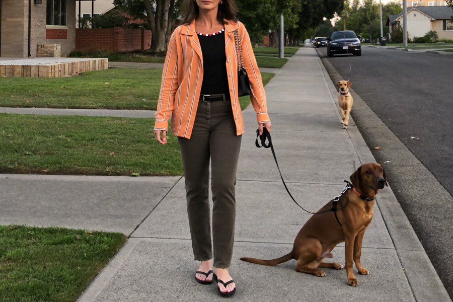
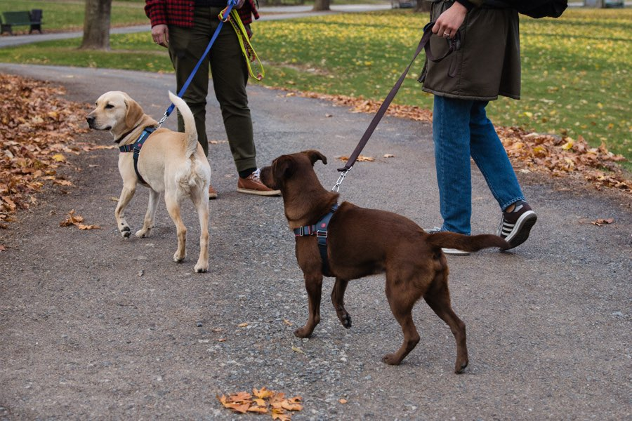

Dlaczego Twój pies „wariuje" na smyczy, i prosty trik, dzięki któremu rowerzyści, biegacze i inne psy nagle przestają go obchodzić
Dla wielu opiekunów każdy spacer zmienia się w walkę: gdy tylko pojawia się inny pies, nie ma już nad nim panowania. Trenerka psów wyjaśnia, dlaczego reaktywność psa nie ma nic wspólnego z nieposłuszeństwem, i co naprawdę pomaga.
 Autor: Lena Hoffmann · Redakcja ŁapaPlan · 2 dni temu · 4 min czytania
Autor: Lena Hoffmann · Redakcja ŁapaPlan · 2 dni temu · 4 min czytania
Znasz to? Spacer jest spokojny, aż do chwili, gdy na końcu ulicy pojawia się inny pies. W kilka sekund Twój pies się zmienia: ciągnie, szczeka, rzuca się na smyczy. Ty się opierasz, mamroczesz „nie, zostaw, do mnie", i czujesz się bezradnie.
Może to uczucie znasz już aż za dobrze: planujesz trasy tak, żeby w miarę możliwości nikogo nie spotkać. Wychodzisz o świcie albo dopiero późnym wieczorem. Omijasz innych opiekunów szerokim łukiem, nerwowo odciągasz psa na bok i czujesz te spojrzenia za plecami. „Nie panuje pan nad swoim psem?" Niektórzy mówią to nawet na głos.
A najgorsze jest to, że Ty kochasz swojego psa ponad wszystko. Chcesz przecież tylko, żeby wspólne spacery znów stały się tym, czym kiedyś były, pięknym momentem we dwoje, a nie torem przeszkód. To ciągłe napięcie, wyrzuty sumienia, rozczarowanie po każdej nieudanej próbie, to wszystko dręczy. Ciebie. I, czy w to wierzysz, czy nie: także Twojego psa.
Nie jesteś w tym sam, a Twój pies nie jest „źle wychowany". Czego większość ludzi nie wie: to zachowanie nie jest uporem, lecz reakcją na stres. Dlatego zwykłe rady („bądź stanowczy", „przeciągnij go") często nie pomagają ani trochę, wręcz przeciwnie.
Dlaczego „więcej dyscypliny" tylko pogarsza problem
Gdy pies wpada w szał przy spotkaniach, jego poziom stresu jest już pod sufitem. W takim stanie w ogóle nie potrafi „słuchać", jego mózg jest w trybie alarmowym. Kto reaguje wtedy szarpnięciem smyczy, tylko go utwierdza: „inne psy = kłopoty". Zachowanie się utrwala.

Punkt zwrotny: pracować nie nad psem, lecz nad sytuacją
Trenerzy stojący za ŁapaPlan idą inną drogą. Zamiast „poprawiać" psa w stanie wyjątkowym, budują fundament wcześniej: pewny sygnał, który przywraca uwagę, oraz stopniowy trening, który zaczyna się dokładnie tam, gdzie Twój pies jeszcze potrafi zachować spokój.
A najlepsze jest to, że nie musisz stawać się psim ekspertem, wykupywać drogich zajęć indywidualnych ani męczyć się godzinami treningu. Potrzebujesz tylko jasnego planu, który pasuje dokładnie do Twojego psa, oraz świadomości, że liczy się każdy mały postęp. Wielu opiekunów opowiada, że już w pierwszych dniach coś się przesuwa: pies częściej podnosi na nich wzrok, smycz częściej pozostaje luźna. A z każdym spokojnym minięciem wraca coś, czego długo brakowało, zaufanie. Po obu stronach smyczy.

Tak wygląda trening, krok po kroku
Jak reaguje Twój pies przy spotkaniach?
Zrób darmowy test w 60 sekund, od razu otrzymasz ocenę dopasowaną dokładnie do Twojego psa.
ZACZNIJ TEST PSA TERAZZa darmo · 60 sekund · wynik od razuCo mówią opiekunowie

„Po trzech tygodniach po raz pierwszy od dawna mogłam przejść obok innego psa i Rocky nie oszalał. Nigdy bym nie pomyślała, że to zależało ode mnie, a nie od niego."

„Plan był tak jasno ułożony, że razem z żoną robiliśmy dokładnie to samo. Wreszcie ciągniemy w jednym kierunku, a Balu to wyczuwa."

„Mam 63 lata i szczerze byłam bliska oddania mojego Coopera, po prostu przestałam wychodzić z domu. Dziś znowu robimy naszą rundę nad jeziorem, zupełnie spokojnie, nawet z innymi psami. Ten plan zwrócił nam obojgu kawałek życia. Wciąż z trudem w to wierzę."

Co sprawia, że ŁapaPlan jest wyjątkowy
Sekretem nie jest żaden nowy cudowny trik, lecz plan pasujący dokładnie do Twojego psa. Odpowiadasz na kilka krótkich pytań o rasę, wiek i zachowanie, a z tego powstaje osobisty plan treningowy. Tydzień po tygodniu, z konkretnymi ćwiczeniami, w całkowicie Twoim tempie, z domu.

- Indywidualnie, a nie na jedno kopyto: dopasowany do rasy, wieku i konkretnego problemu Twojego psa.
- Opracowany przez prawdziwych trenerów psów, wyjaśniony zrozumiale krok po kroku.
- Trener AI zawsze pod ręką: na Twoje pytania odpowie o każdej porze, nawet wieczorem o dziesiątej.
- Jednorazowa płatność zamiast drogich zajęć indywidualnych, bez zobowiązującego abonamentu.
Wyobraź sobie na chwilę, jak to jest: na końcu ulicy pojawia się pies, a Ty po raz pierwszy nie wpadasz w panikę. Twój pies zerka na niego krótko, potem znów na Ciebie. Po prostu idziecie dalej. Żadnych spojrzeń, żadnego ciągnięcia, żadnych wyrzutów sumienia. Tylko wy dwoje. Ten moment jest znacznie bliżej, niż teraz myślisz, i zaczyna się od jednej małej decyzji.
Zrób pierwszy krok do spokojnych spacerów
Krótki test pokaże Ci, na czym polega problem Twojego psa, i jak wyglądałby Twój plan.
ZACZNIJ DARMOWY TEST PSA →W 60 sekund do Twojej osobistej ocenyBez zobowiązującego abonamentu · opracowany przez prawdziwych trenerów